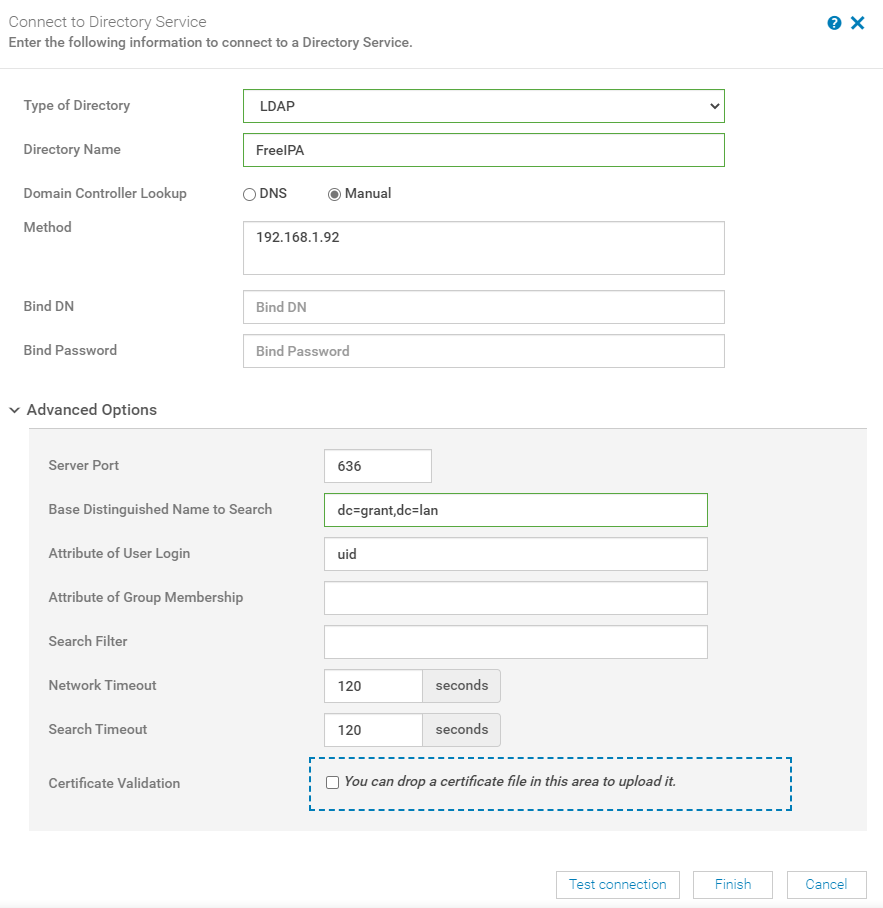
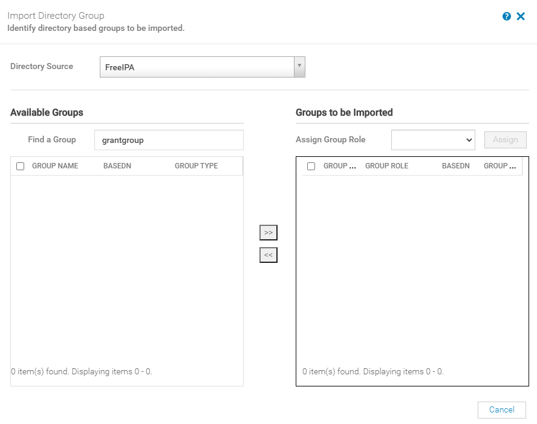

Setting Up FreeIPA with OpenManage
Conclusion: Currently FreeIPA isn't supported or tested against OpenManage. See the User's Guide page 137.
I'm going to try it with OpenLDAP
My Environment
CentOS Version
CentOS Linux release 8.2.2004 (Core)
NAME="CentOS Linux"
VERSION="8 (Core)"
ID="centos"
ID_LIKE="rhel fedora"
VERSION_ID="8"
PLATFORM_ID="platform:el8"
PRETTY_NAME="CentOS Linux 8 (Core)"
ANSI_COLOR="0;31"
CPE_NAME="cpe:/o:centos:centos:8"
HOME_URL="https://www.centos.org/"
BUG_REPORT_URL="https://bugs.centos.org/"
CENTOS_MANTISBT_PROJECT="CentOS-8"
CENTOS_MANTISBT_PROJECT_VERSION="8"
REDHAT_SUPPORT_PRODUCT="centos"
REDHAT_SUPPORT_PRODUCT_VERSION="8"
CentOS Linux release 8.2.2004 (Core)
CentOS Linux release 8.2.2004 (Core)
FreeIPA Version
[root@centos ~]# ipa --version
VERSION: 4.8.4, API_VERSION: 2.235
OpenManage Version
Version 3.4.1 (Build 24)
Helpful Resources
Install Instructions
- Install CentOS8 1.I installed CentOS minimal 2.Make sure NTP is working correctly
- Install OpenManage
- Install the idm system module with
dnf install -y @idm:DL1 freeipa-server - Configure your DNS server (
/etc/hostsdid not work for me) with a record for the hostname of your FreeIPA server. I added a record forcentos.grant.lan. - Run
ipa-server-install1.If you have any DNS failures edit the file/tmp/ipa.system.records.tu5qyl09.db(you may have to change the name) and add the recordcentos.grant.lan 86400 IN A 192.168.1.92(adjust accordingly). Afterwards runipa dns-update-system-records - Run
kinit admin -
Open firewall ports
firewall-cmd --add-port=80/tcp --permanent --zone=public firewall-cmd --add-port=443/tcp --permanent --zone=public firewall-cmd --add-port=389/tcp --permanent --zone=public firewall-cmd --add-port=636/tcp --permanent --zone=public firewall-cmd --add-port=88/tcp --permanent --zone=public firewall-cmd --add-port=464/tcp --permanent --zone=public firewall-cmd --add-port=88/udp --permanent --zone=public firewall-cmd --add-port=464/udp --permanent --zone=public firewall-cmd --add-port=123/udp --permanent --zone=public firewall-cmd --reload -
Log into FreeIPA server at
https://centos.grant.lan. In my case, Windows popped up a username and password prompt. That prompt didn't work - I had to exit it and then log into the webGUI. - Under
Active usersI added an admin user.

- Go to Users and then directory services in OpenManage. I used the following:
- Note: You can get the Bind DN by running
ldapsearchfrom the command line.
- Note: You can get the Bind DN by running
Helpful Commands
To start the IPA service use ipactl start|stop|restart. You can check the status with ipactl status.
Testing
Scenario 1
This got me a working test connection:

Output
[15/Oct/2020:14:09:18.440103345 -0400] conn=107 fd=74 slot=74 SSL connection from 192.168.1.93 to 192.168.1.92
[15/Oct/2020:14:09:18.484254084 -0400] conn=107 TLS1.2 128-bit AES-GCM
[15/Oct/2020:14:09:18.484862509 -0400] conn=107 op=0 BIND dn="" method=128 version=3
[15/Oct/2020:14:09:18.485048511 -0400] conn=107 op=0 RESULT err=0 tag=97 nentries=0 etime=0.044677059 dn=""
[15/Oct/2020:14:09:18.485743204 -0400] conn=107 op=1 SRCH base="dc=grant,dc=lan" scope=2 filter="(uid=grant)" attrs=ALL
[15/Oct/2020:14:09:18.487440884 -0400] conn=107 op=1 RESULT err=0 tag=101 nentries=1 etime=0.001795760
[15/Oct/2020:14:09:18.488143502 -0400] conn=107 op=2 UNBIND
[15/Oct/2020:14:09:18.488159848 -0400] conn=107 op=2 fd=74 closed - U1
[15/Oct/2020:14:09:18.491313979 -0400] conn=108 fd=74 slot=74 SSL connection from 192.168.1.93 to 192.168.1.92
[15/Oct/2020:14:09:18.536590087 -0400] conn=108 TLS1.2 128-bit AES-GCM
[15/Oct/2020:14:09:18.537372005 -0400] conn=108 op=0 BIND dn="uid=grant,cn=users,cn=compat,dc=grant,dc=lan" method=128 version=3
[15/Oct/2020:14:09:18.538144502 -0400] conn=108 op=0 RESULT err=0 tag=97 nentries=0 etime=0.046223517 dn="uid=grant,cn=users,cn=accounts,dc=grant,dc=lan"
[15/Oct/2020:14:09:18.538536207 -0400] conn=108 op=1 UNBIND
[15/Oct/2020:14:09:18.538566004 -0400] conn=108 op=1 fd=74 closed - U1
[15/Oct/2020:14:09:28.961238173 -0400] conn=109 fd=74 slot=74 SSL connection from 192.168.1.93 to 192.168.1.92
[15/Oct/2020:14:09:29.005228025 -0400] conn=109 TLS1.2 128-bit AES-GCM
[15/Oct/2020:14:09:29.005755286 -0400] conn=109 op=0 BIND dn="" method=128 version=3
[15/Oct/2020:14:09:29.005931161 -0400] conn=109 op=0 RESULT err=0 tag=97 nentries=0 etime=0.044397507 dn=""
[15/Oct/2020:14:09:29.006898618 -0400] conn=109 op=1 SRCH base="dc=grant,dc=lan" scope=2 filter="(uid=grant)" attrs=ALL
[15/Oct/2020:14:09:29.008536186 -0400] conn=109 op=1 RESULT err=0 tag=101 nentries=1 etime=0.001740822
[15/Oct/2020:14:09:29.009182689 -0400] conn=109 op=2 UNBIND
[15/Oct/2020:14:09:29.009196697 -0400] conn=109 op=2 fd=74 closed - U1
[15/Oct/2020:14:09:29.012428320 -0400] conn=110 fd=74 slot=74 SSL connection from 192.168.1.93 to 192.168.1.92
[15/Oct/2020:14:09:29.057469132 -0400] conn=110 TLS1.2 128-bit AES-GCM
[15/Oct/2020:14:09:29.058084024 -0400] conn=110 op=0 BIND dn="uid=grant,cn=users,cn=compat,dc=grant,dc=lan" method=128 version=3
[15/Oct/2020:14:09:29.058825635 -0400] conn=110 op=0 RESULT err=0 tag=97 nentries=0 etime=0.046016675 dn="uid=grant,cn=users,cn=accounts,dc=grant,dc=lan"
[15/Oct/2020:14:09:29.059166870 -0400] conn=110 op=1 UNBIND
[15/Oct/2020:14:09:29.059195118 -0400] conn=110 op=1 fd=74 closed - U1
Scenario 2
When I added a Bind DN as shown in this video I get a failure.

Error Message
Log Output
[15/Oct/2020:14:12:07.504942397 -0400] conn=112 fd=74 slot=74 SSL connection from 192.168.1.93 to 192.168.1.92
[15/Oct/2020:14:12:07.550456498 -0400] conn=112 TLS1.2 128-bit AES-GCM
[15/Oct/2020:14:12:07.551077266 -0400] conn=112 op=0 BIND dn="uid=grant,cn=users,cn=accounts,dc=grant,dc=lan" method=128 version=3
[15/Oct/2020:14:12:07.551767359 -0400] conn=112 op=0 RESULT err=0 tag=97 nentries=0 etime=0.046428458 dn="uid=grant,cn=users,cn=accounts,dc=grant,dc=lan"
[15/Oct/2020:14:12:07.552283396 -0400] conn=112 op=1 SRCH base="dc=grant,dc=lan" scope=2 filter="(uid=grant)" attrs=ALL
[15/Oct/2020:14:12:07.553922212 -0400] conn=112 op=1 RESULT err=0 tag=101 nentries=1 etime=0.001752227
[15/Oct/2020:14:12:07.555518270 -0400] conn=112 op=2 UNBIND
[15/Oct/2020:14:12:07.555534158 -0400] conn=112 op=2 fd=74 closed - U1
Scenario 3 - Current Sticking Point
Using the settings from scenario 1, I continued. When trying to add a group though, no groups are displayed in available groups.

Output
[15/Oct/2020:15:19:49.806462707 -0400] conn=169 fd=103 slot=103 SSL connection from 192.168.1.18 to 192.168.1.92
[15/Oct/2020:15:19:49.856773316 -0400] conn=169 TLS1.2 128-bit AES-GCM
[15/Oct/2020:15:19:49.858681446 -0400] conn=169 op=0 BIND dn="" method=128 version=3
[15/Oct/2020:15:19:49.858906917 -0400] conn=169 op=0 RESULT err=0 tag=97 nentries=0 etime=0.051584941 dn=""
[15/Oct/2020:15:19:49.864335125 -0400] conn=169 op=1 SRCH base="dc=grant,dc=lan" scope=2 filter="(uid=grant)" attrs=ALL
[15/Oct/2020:15:19:49.866001831 -0400] conn=169 op=1 RESULT err=0 tag=101 nentries=1 etime=0.001790286
[15/Oct/2020:15:19:49.867368889 -0400] conn=169 op=2 UNBIND
[15/Oct/2020:15:19:49.867386461 -0400] conn=169 op=2 fd=103 closed - U1
[15/Oct/2020:15:19:49.873375865 -0400] conn=170 fd=103 slot=103 SSL connection from 192.168.1.18 to 192.168.1.92
[15/Oct/2020:15:19:49.925956643 -0400] conn=170 TLS1.2 128-bit AES-GCM
[15/Oct/2020:15:19:49.928180447 -0400] conn=170 op=0 BIND dn="uid=grant,cn=users,cn=compat,dc=grant,dc=lan" method=128 version=3
[15/Oct/2020:15:19:49.928993026 -0400] conn=170 op=0 RESULT err=0 tag=97 nentries=0 etime=0.053916831 dn="uid=grant,cn=users,cn=accounts,dc=grant,dc=lan"
[15/Oct/2020:15:19:49.934942058 -0400] conn=170 op=1 SRCH base="dc=grant,dc=lan" scope=2 filter="(&(cn=grantgroup*)(uniqueMember=*))" attrs="cn entryuuid"
[15/Oct/2020:15:19:49.935438340 -0400] conn=170 op=1 RESULT err=0 tag=101 nentries=0 etime=0.000639539
[15/Oct/2020:15:19:49.936729725 -0400] conn=170 op=2 UNBIND
[15/Oct/2020:15:19:49.936744908 -0400] conn=170 op=2 fd=103 closed - U1